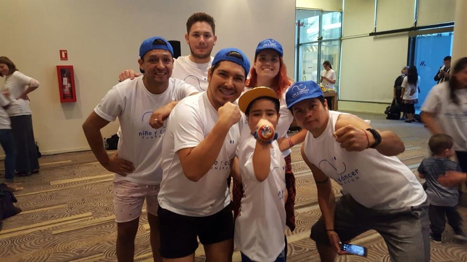

Una noche de música, sorpresas y generosidad.
Con gran éxito se desarrolló nuestra Tallarinata de Amor y Sonrisas el 30 de agosto en el Estadio del Banco Central.
Montaña de alegría 2017
Proyecto recreativo y psicoterapéutico que se realiza desde el año 2002. Se traduce en "Una Terapia para el Alma".

El objetivo de este proyecto es beneficiar a jóvenes recuperados de cáncer con becas académicas, para lograr la continuidad de estudios pendientes y obtener una profesión futura y reinserción en la sociedad.
Las becas podrán atender a los jóvenes con estudios universitarios, técnicos profesionales o de centros de formación técnica. Así también podrán tener alcances parciales y en ocasiones especiales, totales.
El año 2018 se otorgaron un total de 28 becas de las cuales 15 corresponden alumnos antiguos y 13 son para alumnos que inician sus estudios superiores este año 2018.
Para que estas becas sean bien utilizadas, sean objetivas y sean supervisadas, elaboramos requisitos básicos y similares a los utilizados en el resto de las instituciones que entregan estos beneficios.
Agradecimiento a nuestros colaboradores y socios
Fundación Niño y Cáncer agradece sinceramente a empresas, socios, particulares, colegios y a cada uno de ustedes por su valiosa colaboración prestada durante el periodo 2017.
Para la tarea que nuestra Fundación realiza, el aporte que ustedes han realizado, significa la posibilidad de dar continuidad a nuestros proyectos en beneficios de los niños que son afectados de una enfermedad altamente impactante, como es el cáncer.
Sepan que las ayudas por ustedes proporcionadas se destinó al financiamiento de Becas de Estudios Superiores, Departamentos de Acogida, Mejoramiento de las instalaciones hospitalarias, actividades recreativas, entre otras actividades que la Fundación realiza permanentemente.
Deseamos que este año 2018 sea un excelente año para ustedes y para sus familias y les motivamos, para que esta relación que hemos establecido, continúe creciendo y multiplicándose.

Renovación de Unidades de Oncología Infantil.
XXI Campimg de los sueños 2018.